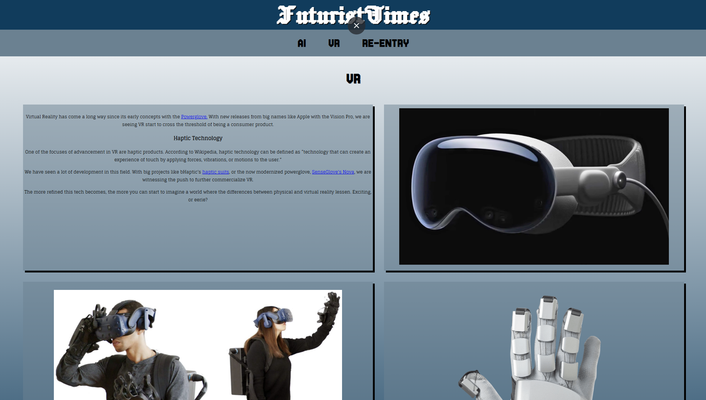
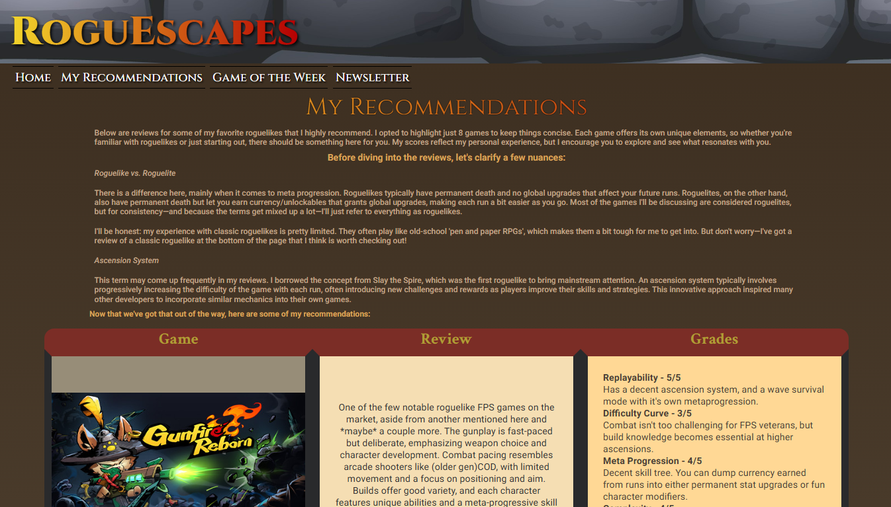
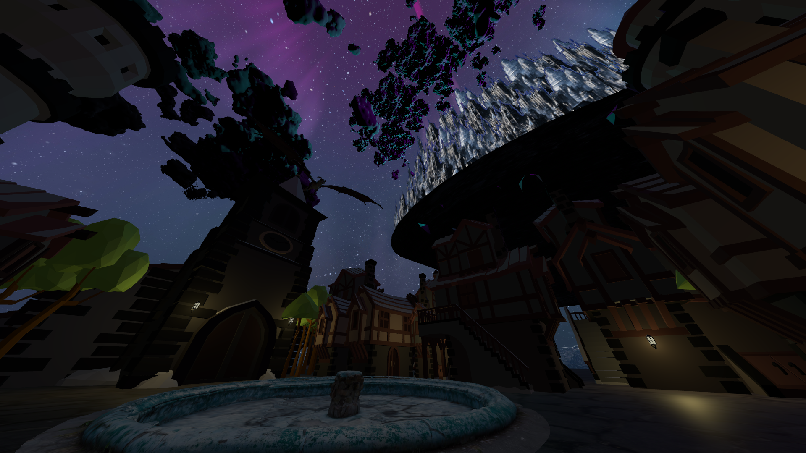
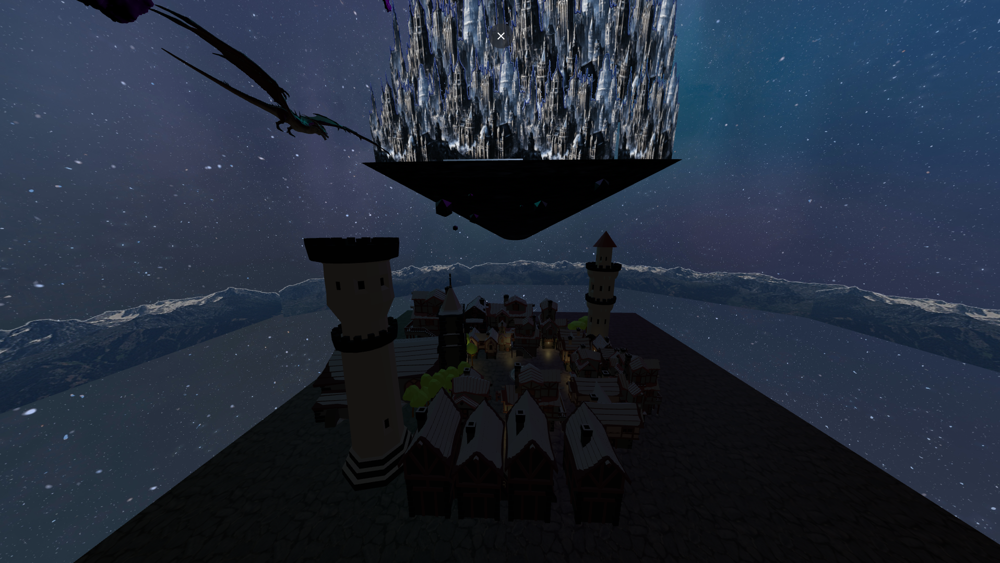
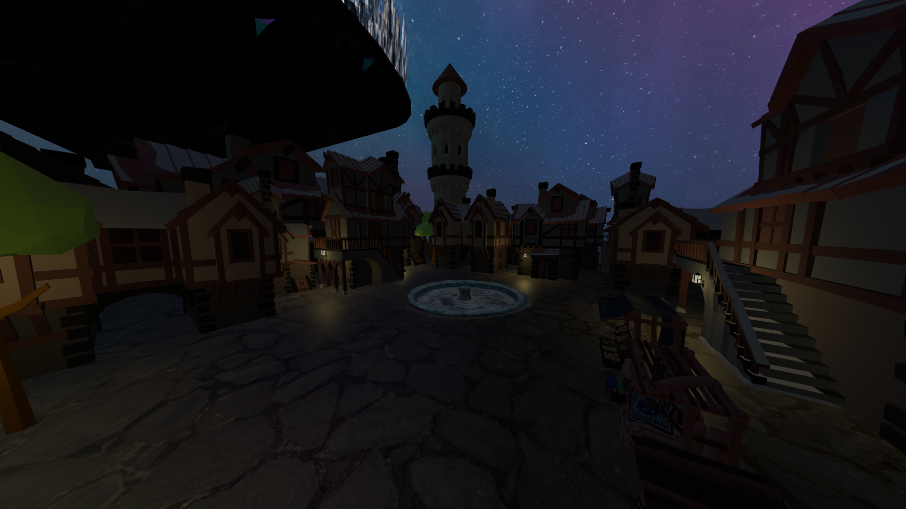
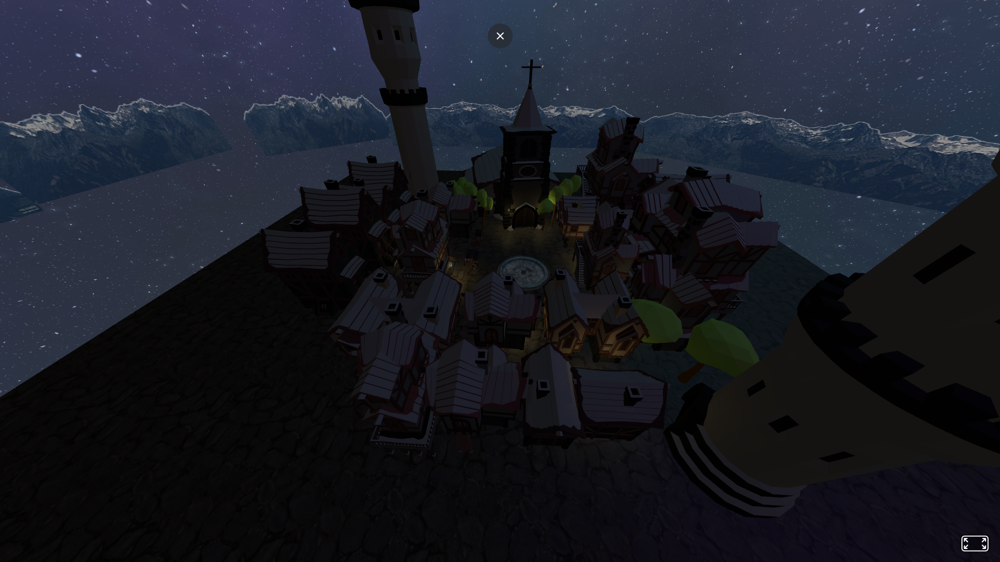

FuturistTimes
One of the first websites I made for a project, right after learning how to design for mobile viewports. It's very rudimentary, but I wanted to show it as a good comparison to my most recent project.
The site was purposed as a blog to showcase and discuss modern technological advancements.

RoguEscapes
My most recent project (other than this portfolio). This was was really fun because we were tasked to pick any topic we wanted to, so I made a blog about video games.
The site goes over a specific genre of video games, rogue-likes. The meat of the site is the recommendation page, where I provided somewhat-detailed reviews and grades of 10 games I chose.
My favorite part of this website was displaying my improved technical ability, particularly when working with tables. There is a good amount of growth seen in this website compared to FuturistTimes.
A-Frame
This was a small “mess around with a framework” side project tasked to us. It was really fun to work with A-Frame and was a great learning experience.
Unfortunately, I had trouble making this site easy to view because there were conflicts with some of the models used and the A-Frame version number, so I opted to show screenshots instead. Will attempt to fix the issues at some point.
The scene depicted is from the book series mentioned on the home page, “Malazan Book of the Fallen”(reference for the scene is also pictured on home page). On the ground is a human-populated city, Darujhistan. Overlooking the city is another city sitting on top of a giant floating rock, Moon's Spawn.
An ancient race of elves live on this city, and they post at and survey other settlements for periods of time. Some of these elves can shapeshift into dragons; one can be seen flying over the city.



